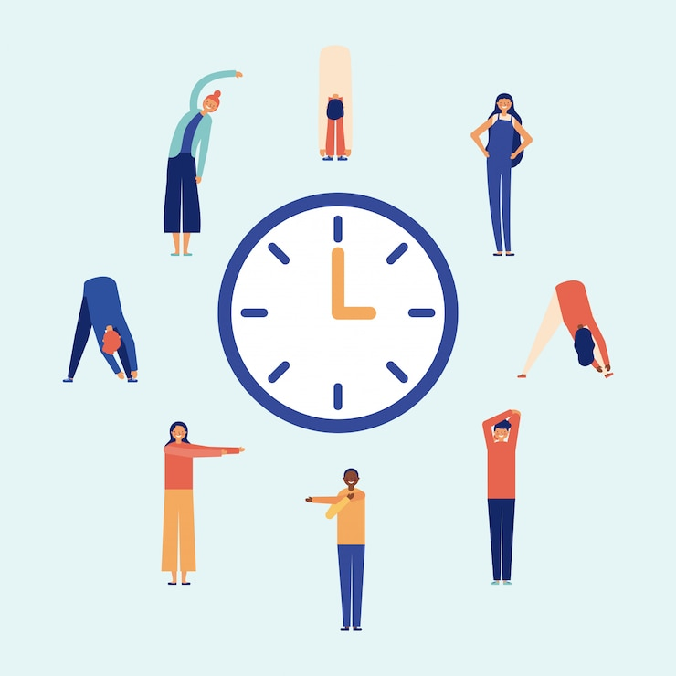

¿Qué son pausas activas?
Son descansos realizados de manera en la que el cuerpo y mente no se enfrien, sino mas bien descansen y se activen mas.
Son descansos realizados de manera en la que el cuerpo y mente no se enfrien, sino mas bien descansen y se activen mas.
Las pausas activas buscan realizar actividades contrarias a las que se realicen cuando se trabaja o simplemente se realiza una actividad por mucho tiempo, por ejemplo: si pasamos mucho tiempo sentados, en la pausa activa realizaremos ejercicios que requieran ponernos de pie, y asi sucesivamente .Las pausas activas se recomiendan que tengan una duración de 5 a 10 minutos, y que se realicen cada 2 horas, para mantener nuestro cuerpo activo.
Las pausas activas mas comunes son ejercicios fisicos, como dar una pequeña caminata, estirar el cuerpo, tomar un descanso. O incluso podemos hacer pausas activas mas cognitivas o psicologicas, juegos como mimica, stop, etc